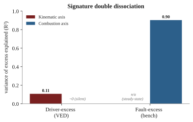

Driver or Vehicle? Signature-Based Attribution of Excess Fuel Consumption
Using Public Fleet Telemetry and an Engine-Fault Bench
scripts/ and an entry in RESULTS.md; confidence intervals are cluster
bootstraps. References validated with bibtest.Abstract
Excess fuel consumption presents the same symptom for two very different causes: an aggressive driver and a malfunctioning vehicle both burn more than expected, yet one calls for coaching and the other for maintenance. A fuel-per-distance figure cannot tell them apart. We show the two causes leave separable signatures. Driver-caused excess is transient and kinematic, expressed in acceleration, jerk, and harsh events at a normal air-fuel ratio; malfunction-caused excess, exemplified by a rich mixture, is steady-state and combustion-linked, expressed as an air-fuel-ratio shift and in the unburnt-fuel emission products. Because no public dataset carries fuel, mechanical-fault labels, and driver behaviour jointly, we adopt a two-arm design on real data: a fleet-telemetry arm on the Vehicle Energy Dataset (VED; 197 gasoline vehicles, 14,460 trips) and a controlled engine-fault arm on EngineFaultDB, with the behaviour axis externally validated on an independent labelled driving dataset. An expected-fuel model reaches held-out \(R^2 = 0.673\) (95% CI [0.628, 0.709]); driving behaviour and a persistent vehicle-baseline explain 8% and 14% of trip-fuel variance. The rich-mixture fault burns +6.2% excess fuel with an emissions signature, while the combustion axis remains silent for driver-caused excess (held-out \(R^2 \le 0\)), a silence that survives a trim-corrected fuel target and holds within the highest-trim vehicles. On semi-synthetic ground truth, where both causes raise fuel by the same amount so that magnitude is uninformative, the signature attributes driver-versus-fault excess at 96% accuracy (95% CI [0.956, 0.962]) against a fuel-only baseline at chance. Both axes derive from standard on-board-diagnostics channels, making per-trip attribution deployable on existing telematics.
Contributions
- A signature-based framework that attributes excess fuel to driver behaviour versus vehicle malfunction using only public data, resolved into a kinematic and a combustion axis.
- A variance decomposition of trip fuel on a 197-vehicle, 14,460-trip public fleet into behaviour, vehicle-baseline, and environment components, each with bootstrap confidence intervals.
- A cross-dataset signature contrast: the combustion axis is silent for driver-caused excess (\(R^2 \le 0\)), a silence that survives trim-corrected fuel and the highest-trim vehicles, ruling out a measurement artifact.
- A measured attribution accuracy of 96% (95% CI [0.956, 0.962]) on semi-synthetic ground truth at a bench-calibrated fault magnitude, where fuel magnitude alone is at chance.
- An account of the field-wide absence of any joint fuel + fault + behaviour dataset, and a reproducible pipeline and paper in which every number traces to a script.
1. Introduction
Fuel is the largest controllable operating cost of a commercial vehicle fleet and a direct source of tailpipe emissions. When a vehicle consistently burns more than expected, an operator faces a decision with two very different remedies: coach the driver, or service the vehicle. The remedies are not interchangeable. Sending an efficient driver to remedial training wastes time and erodes trust, and dispatching a mechanically sound vehicle to the workshop wastes a service slot; conversely, a genuine fault left uncorrected keeps burning fuel and may worsen. The decision therefore rests on knowing the cause of the excess, not merely its size.
We treat this as an attribution problem. For a trip that consumed more fuel than its route and conditions warrant, let the excess be the difference between observed and expected consumption; the task is to decompose that excess into a driver-behaviour component and a vehicle component. Raw fuel per distance cannot perform this decomposition, because both an aggressive driving style and a degraded engine inflate the same scalar. The question is operationally valuable and, on public data, largely unanswered: fuel-consumption models predict the scalar accurately without decomposing its causes; eco-driving and behaviour-scoring work quantifies the driver in isolation; and predictive-maintenance work targets the fault directly but rarely treats fuel efficiency as the symptom to explain.
Our approach rests on a physical observation about how the two causes express themselves. Driver-caused excess is transient and kinematic: it lives in acceleration, jerk, and harsh acceleration or braking events, while the engine continues to run at its normal, near-stoichiometric air-fuel ratio. Malfunction-caused excess, taking the rich-mixture fault as the canonical fuel-relevant case, is steady-state and combustion-linked: it shifts the air-fuel ratio away from stoichiometric and leaves its trace in the exhaust chemistry, in elevated carbon monoxide and unburnt hydrocarbons. Crucially, both signatures are observable on standard on-board-diagnostics hardware. The kinematic axis derives from GPS and inertial channels; the combustion axis derives from the short- and long-term fuel trims that every closed-loop engine reports, and, on a bench, from the air-fuel ratio directly.
The obstacle to demonstrating this on real data is that no public dataset carries fuel consumption, mechanical-fault labels, and driver behaviour together. A dedicated search (Section 3.4) confirms the gap: the datasets that pair fuel with fault labels lack driver context or ship dimensionality-reduced, and the driving-behaviour datasets lack fuel. We therefore adopt a two-arm design on the datasets that each carry one ground truth, and bridge them with a semi-synthetic experiment that supplies the competing-cause labels no real dataset provides. The fleet-telemetry arm (VED) grounds the decomposition and the driver side; the engine-fault arm (EngineFaultDB) grounds the malfunction signature; an independent labelled driving dataset validates the kinematic axis; and the semi-synthetic injection measures attribution accuracy directly.
The evidence chain runs as follows: an expected-fuel model and its variance decomposition establish that behaviour and a persistent vehicle-baseline are separable, measurable shares of trip fuel; the behaviour axis is validated to transfer to an independent dataset; the rich-mixture fault is shown to produce measurable excess fuel with an emissions signature; a signature contrast shows the combustion axis is silent for driver-caused excess; and the semi-synthetic experiment shows that, when fuel magnitude is made uninformative, the signature recovers the cause at 96% accuracy. The remainder of the paper is organized as related work (Section 2), data (Section 3), method and equations (Section 4), experimental setup (Section 5), results for the two arms and the attribution (Sections 6-8), discussion (Section 9), limitations (Section 10), and conclusion (Section 11).
2. Related work
Four largely separate literatures meet in this problem: fuel-consumption modelling, eco-driving and behaviour scoring, predictive maintenance and engine-fault diagnosis, and telemetry anomaly detection. A fifth thread, explainable attribution, contains the nearest prior work. We review each and state where our contribution sits; the positioning is summarized in Table 1.
2.1 Fuel-consumption modelling
Physics-based models map instantaneous kinematics to fuel and emissions. Vehicle specific power [7] expresses the tractive power demand per unit mass and underlies many modal emission models; the VT-Micro family [8] fits polynomials in speed and acceleration to instantaneous fuel and emission rates; and the power-based VT-CPFM [11] derives consumption from a physical power formulation with few calibrated parameters. Data-driven models now lead on on-board-diagnostics and telematics inputs: tree ensembles are the reliable workhorse and have been shown to beat both neural baselines and the engine-control-unit estimate against ground-truth fuel meters [4], and kernel methods map engine parameters to fuel rate from OBD-II [9]. These models predict consumption accurately, but they estimate a single quantity; none decomposes that quantity into the driver and vehicle contributions that an operator must separate.
2.2 Eco-driving and driving-behaviour scoring
Driving style moves fuel use substantially; data-driven eco-driving reviews report savings of roughly 5-15% from smoother driving [5], a range our behaviour counterfactual reproduces (Section 6.2), and recent reviews survey behaviour-to-fuel machine learning specifically [15]. Driver behaviour has been classified from OBD signals and used to predict fuel consumption [12], recognized as a driving style from smartphone inertial sensors [14], and linked to efficiency through drive-cycle simulation [13]. This literature scores the driver in isolation. It does not separate the driver's contribution from the vehicle's, and in single-driver-per-vehicle data the two are confounded unless a model controls for one.
2.3 Predictive maintenance and engine-fault diagnosis
Fault-diagnosis work detects sensor and actuator faults in the air-fuel path from telemetry: neural detection and isolation of multiple engine-sensor faults [16], fault-tolerant handling of the mass-air-flow sensor whose signal we use to derive fuel [17], and deep-learning fault diagnosis from driving signals [18]. The EngineFaultDB dataset we use as our malfunction arm was released with a fault-classification baseline [2]; we repurpose it to quantify the fuel signature of a fault rather than to classify faults. These methods target the fault directly and treat fuel efficiency as an input, not as the symptom to be attributed.
2.4 Telemetry anomaly detection
The detector toolbox is mature: isolation forest [19], one-class methods, and autoencoder or recurrent models. In the automotive setting, however, most of this work targets controller-area-network intrusion and safety rather than fuel efficiency, for example LSTM autoencoders [20], recurrent autoencoders for embedded intrusion detection [21], and spatiotemporal detection for connected vehicles [22]. These methods flag that a trip is anomalous; they do not assign a fuel anomaly to a driver-versus -vehicle cause. Fuel theft or leakage is a related but distinct anomaly, detected as an abrupt change point [10]; that is a sudden step in fuel level, whereas the excess we attribute is a sustained efficiency shift.
2.5 Explainable attribution and the nearest prior work
Feature-attribution methods such as SHAP [23] explain a model's output in terms of its input features. The nearest prior work applies explainability to our exact problem: Barbado and Corcho detect fuel-consumption anomalies on fleet telematics with interpretable feature relevance and counterfactual recommendations [3]. Their method identifies which features co-occur with an anomaly and what change would return an outlier to normal. It attributes an anomaly to features, not to a cause class: it does not say whether the excess is the driver or the vehicle, and its feature relevances are not validated against an external ground truth for either cause. Our signature-based decomposition is the increment: we group observables into two physically motivated axes, validate each against an independent signal, and measure the resulting cause attribution.
| Approach | Detects excess | Ranks features | Attributes driver vs vehicle | Externally validated |
|---|---|---|---|---|
| Fuel modelling + residual threshold [4] | yes | no | no | — |
| Eco-driving / behaviour scoring [5,12] | driver only | partial | no | — |
| Engine-fault diagnosis [16] | vehicle only | partial | no | fault label |
| Anomaly detection + feature relevance [3] | yes | yes | no | no |
| This work | yes | yes | yes (measured, 96%) | yes |
3. Data
3.1 Vehicle Energy Dataset (driver arm)
VED [1] is a naturalistic driving dataset collected in Ann Arbor, Michigan from November 2017 to November 2018, comprising 383 personal vehicles logged over roughly 374,000 miles through OBD-II loggers, with synchronized GPS trajectories and engine channels. Each record carries a timestamp, latitude and longitude, vehicle speed, mass air-flow, engine RPM, absolute load, outside air temperature, auxiliary power, and, for gasoline vehicles, the short- and long-term fuel trims; records are keyed by a unique vehicle and trip identifier. We restrict the analysis to the 264 internal-combustion (gasoline) vehicles, excluding hybrids and electric vehicles whose fuel path is confounded by the electric drive. The dedicated OBD fuel-rate parameter is essentially unpopulated in VED, so fuel is derived from mass air-flow (Eq. 1), the standard practice for this dataset. After resampling each trip to a uniform 1 Hz grid and applying quality filters (a minimum trip distance of 0.5 km, a minimum duration of 60 s, and at least 50% valid mass air-flow coverage), the pipeline yields 14,460 trips across 197 vehicles. The variance decomposition and attribution analyses further clip the fuel target at its 1st and 99th percentiles to remove sensor glitches, leaving 14,170 trips across 194 vehicles; the semi-synthetic study restricts to the 139 vehicles with at least 15 trips carrying usable fuel-trim coverage, so that per-vehicle baselines are stable. Median trip length is about 7 minutes.
3.2 EngineFaultDB (malfunction arm)
EngineFaultDB [2] is a controlled test-bench dataset built around a C14NE spark-ignition engine, with 55,999 records over 14 variables: manifold absolute pressure, throttle position, torque, power, RPM, vehicle speed, exhaust concentrations of carbon monoxide, hydrocarbons, carbon dioxide and oxygen, the air-fuel equivalence ratio lambda, the air-fuel ratio, and fuel consumption in both litres per hour and litres per 100 km. A fault label takes four values: 0 normal, 1 rich mixture, 2 lean mixture, and 3 low-voltage ignition. The rich-mixture label is confidently identified from its emission signature (elevated carbon monoxide); the lean-versus-ignition mapping of labels 2 and 3 is taken from the source paper's listing order, as the definitive mapping resides in a table published only as an image. This uncertainty does not affect our result, which concerns the rich-mixture fault. The bench carries no driver context, so it grounds the malfunction fuel signature but not driving behaviour.
3.3 Driving Events (behaviour validation)
The Driving Events dataset [6] provides smartphone inertial recordings from three drivers, with a linear-acceleration stream at approximately 400 Hz and a companion file labelling time windows as aggressive manoeuvres (right or left turn, braking, acceleration, lane change) or non-aggressive events. After joining sensor rows to labelled windows we obtain 169 events, 143 aggressive and 26 non-aggressive. Two properties matter for interpretation and are stated up front: the sensing regime differs from VED (400 Hz smartphone inertial versus 1 Hz OBD kinematics), and the class balance is skewed toward aggressive events.
3.4 The joint-data gap
No public dataset carries fuel consumption, mechanical-fault labels, and driver behaviour jointly, which is precisely what a single-dataset attribution study would need. Our search of the candidates substantiates this. EngineAD pairs a real-fleet fuel-rate channel with technician fault labels but is released as eight principal components, so the raw fuel signal is not recoverable, and access is gated. The diesel-fault dataset DEFault carries fault labels but no fuel-consumption channel, only in-cylinder pressure and vibration. SCANIA Component X provides real heavy-truck maintenance records but fully anonymized signals with no identifiable fuel variable, and the NASA C-MAPSS prognostics benchmark is a simulated turbofan with no real malfunction and no driver context. EngineFaultDB is the only openly downloadable dataset that pairs fuel consumption with fault labels, and it is a bench without drivers. This documented gap is the reason for the two-arm design and the semi-synthetic bridge.
| Dataset | Role | Ground truth | Scale used | Sampling | License |
|---|---|---|---|---|---|
| VED [1] | Driver arm | Real fleet, behaviour | 197 cars / 14,460 trips | 1 Hz | Apache-2.0 |
| EngineFaultDB [2] | Malfunction arm | Labelled engine faults | 55,999 samples | bench | GPL-3.0 |
| Driving Events [6] | Behaviour validation | Aggressive vs normal | 3 drivers / 169 events | 400 Hz | CC-BY-4.0 |
4. Method
4.1 Fuel target
Because the OBD fuel-rate parameter is unpopulated in VED, we derive the instantaneous fuel rate from mass air-flow \(\dot m_{\text{air}}\) (g/s) assuming a stoichiometric gasoline air-fuel ratio of 14.7 and a fuel density of 745 g/L,
\[ \dot V_{\text{fuel}}\;[\text{L/h}] \;=\; \frac{\dot m_{\text{air}}}{14.7 \times 745}\times 3600, \tag{1}\]and integrate over the 1 Hz trip grid, normalizing by trip distance to obtain the trip target \(f\) in litres per 100 km. For the robustness analysis of Section 8.4 we also form a trim-corrected target that restores the fuel the stoichiometric assumption ignores,
\[ \dot V^{\text{corr}}_{\text{fuel}} \;=\; \dot V_{\text{fuel}}\left(1 + \frac{\text{STFT}+\text{LTFT}}{100}\right), \tag{2}\]where STFT and LTFT are the short- and long-term fuel trims in percent.
4.2 Expected-fuel model and excess
We predict trip fuel from a behaviour feature block \(x^{\text{beh}}\) and a conditions block \(x^{\text{env}}\) (Table 3) with a gradient-boosted regression tree ensemble \(M\),
\[ \hat f_i \;=\; M\!\left(x^{\text{beh}}_i,\, x^{\text{env}}_i\right), \tag{3}\]and define trip excess as the out-of-fold residual
\[ e_i \;=\; f_i - \hat f_i . \tag{4}\]All predictions are out-of-fold under a GroupKFold split by vehicle, so no vehicle is ever scored by a model that has seen any of its trips; this prevents the model from memorizing a vehicle's identity and ensures the residual reflects deviation from the fleet, not from the vehicle itself. Behaviour features include mean and dispersion of speed, mean positive acceleration and its 95th percentile, jerk, harsh-acceleration and harsh-braking rates (events exceeding \(\pm 2.5\ \text{m/s}^2\), counted per km), idle fraction (speed below 3 km/h), stops per km, highway fraction, and vehicle specific power computed with zero road grade; conditions include outside air temperature, air-conditioning and heater power, vehicle weight, distance, and duration.
| Block | Features |
|---|---|
| Behaviour \(x^{\text{beh}}\) | speed mean, speed SD, speed p85, mean positive acceleration, acceleration p95, deceleration p05, jerk RMS, harsh-accel/km, harsh-brake/km, idle fraction, stops/km, highway fraction, vehicle specific power |
| Conditions \(x^{\text{env}}\) | outside air temperature, AC power, heater power, weight, distance, duration |
| Combustion axis | short-term fuel trim, long-term fuel trim (VED); air-fuel ratio, lambda, CO, HC (bench) |
4.3 Decomposition
The persistent per-vehicle deviation, the vehicle-baseline, is the mean out-of-fold residual of vehicle \(j\),
\[ v_j \;=\; \frac{1}{n_j}\sum_{i \in j} e_i . \tag{5}\]The behaviour component of a trip is a counterfactual: the model's prediction for the observed driving minus its prediction when the aggression features are set to a gentle reference \(x^{\text{ref}}\) (the population 20th percentile of each aggression feature), holding conditions fixed,
\[ b_i \;=\; M\!\left(x^{\text{beh}}_i, x^{\text{env}}_i\right) - M\!\left(x^{\text{ref}}, x^{\text{env}}_i\right). \tag{6}\]To size the components at the population level we decompose the variance of \(f\). With \(R^2_{\text{env}}\) the coefficient of determination of a conditions-only model and \(R^2_{\text{full}}\) that of the full model, the unique (marginal) behaviour share is \(R^2_{\text{full}}-R^2_{\text{env}}\); the vehicle-baseline share is the between-vehicle sum of squares of the residual expanded over trips, divided by the total sum of squares,
\[ s_{\text{veh}} \;=\; \frac{\sum_i (v_{j(i)}-\bar e)^2}{\sum_i (f_i-\bar f)^2}, \tag{7}\]and the unexplained share is \(1-R^2_{\text{full}}-s_{\text{veh}}\).
4.4 The two axes and the signature contrast
The kinematic axis summarizes transient aggression through the behaviour features above; the combustion axis measures the deviation of the air-fuel ratio from stoichiometric. The combustion axis is observable in both worlds and placed on a common percent-fuel-per-air scale: in VED as the fuel trims, \(c^{\text{VED}} = \text{STFT}+\text{LTFT}\), and on the bench directly from the air-fuel ratio,
\[ c^{\text{bench}} \;=\; \left(\frac{14.7}{\text{AFR}}-1\right)\times 100 . \tag{8}\]The signature contrast regresses each excess on each axis, reporting the held-out coefficient of determination. The informative comparison is whether the combustion axis, which by construction tracks fault-caused excess, also tracks driver-caused excess; the claim is that it does not.
4.5 Semi-synthetic attribution
Because no real dataset labels a trip's excess by cause, we construct ground truth by injection. From each real base trip we form a driver-caused and a fault-caused variant that raise fuel by the same amount \(\Delta f\), so that fuel magnitude carries no information about the cause. The driver variant adds signal to the kinematic axis and leaves the combustion axis at its real value; the fault variant adds signal to the combustion axis and leaves kinematics unchanged. The injected strength \(S\) is expressed in units of the natural within-vehicle standard deviation of the axis, so that real trip-to-trip variation supplies the confounding noise. Writing \(z^k\) and \(z^c\) for the real within-vehicle-standardized kinematic and combustion deviations,
\[ \text{driver:}\;(z^k+S,\;z^c), \qquad \text{fault:}\;(z^k,\;z^c+S). \tag{9}\]We calibrate \(S\) to the measured rich-mixture fault: its combustion shift of 3.0% fuel-per-air, divided by the median within-vehicle long-term-trim standard deviation of 1.79%, gives \(S_{\text{bench}} \approx 1.66\). A logistic attributor is trained on the two axis-deviations, \((z^k, z^c)\), under GroupKFold by vehicle; a control classifier that sees only the fuel excess \(\Delta f\) is the chance baseline.
4.6 Baselines
We compare against the detection and feature-relevance methods the literature offers: an isolation forest [19] over trip features as an unsupervised anomaly detector; permutation importance over the fuel model as the feature-relevance surrogate used by explainable anomaly work [3]; and a pooled model that omits any vehicle term, to show how much per-vehicle systematic effect is left unattributed when the vehicle is not modelled. Because no cause-labelled trip benchmark exists on real data, these comparisons establish a capability contrast; the quantitative accuracy comparison is the semi-synthetic experiment of Section 4.5.
5. Experimental setup
The expected-fuel model is a histogram gradient-boosted regression tree ensemble (400 boosting iterations, learning rate 0.05, maximum depth 6; the auxiliary conditions-only and behaviour-only models use 300 iterations and depth 5), trained under 5-fold GroupKFold by vehicle with a fixed random seed. The fuel-model coefficient of determination is stable across five seeds, ranging 0.672 to 0.676. Confidence intervals throughout are cluster bootstraps that resample whole vehicles with replacement over 1,000 draws and report the 2.5th and 97.5th percentiles; for the behaviour-validation study the bootstrap resamples events, and the permutation test uses 1,000 label permutations with the leave-one-driver-out cross-validation repeated inside each. On the bench, cross-validation must shuffle folds: the records are grouped by fault and ordered within each group, so a non-shuffled 5-fold split partitions the rich subset into disjoint operating ranges and the model, forced to extrapolate, returns a spuriously negative coefficient of determination; the rows are exchangeable for this regression, so shuffled folds are correct. Software: Python 3.14, scikit-learn 1.8, pandas 2.3, scipy 1.17, and pyarrow. Datasets are obtained from their original sources and are not redistributed; the pipeline scripts regenerate every number.
6. Results: driver arm (VED)
6.1 Expected-fuel model
The expected-fuel model reaches a held-out coefficient of determination of 0.673 (95% CI [0.628, 0.709]) with a mean absolute percentage error of 13.3% (95% CI [12.3, 14.3]), stable across seeds. This accuracy is in the range reported for OBD-based fuel models on other fleets [4,9], though the datasets differ and the numbers are not directly comparable; the model's role here is to define a well-calibrated expectation from which excess is measured, not to set a new accuracy record.
6.2 Variance decomposition and the vehicle-baseline
Decomposing the variance of trip fuel (Table 4) shows that route and environment dominate, that driving behaviour contributes a unique 8% beyond conditions and up to 37% counting the variance it shares with route, and that a persistent vehicle-baseline accounts for a further 14%. The vehicle-baseline is a real, size-independent effect: regressing the per-vehicle fixed effect on engine displacement and weight explains only 23% of it, leaving roughly three-quarters unexplained by vehicle size. This is the component that an operator would want to route to inspection, and it is invisible to a model that does not represent the vehicle.
| Component | Share of fuel variance | 95% CI |
|---|---|---|
| Environment / route (conditions only, \(R^2_{\text{env}}\)) | 0.593 | [0.542, 0.636] |
| Behaviour only (\(R^2_{\text{beh}}\)) | 0.366 | — |
| Full model (\(R^2_{\text{full}}\)) | 0.673 | [0.628, 0.709] |
| Behaviour, unique marginal | 0.080 | [0.060, 0.102] |
| Environment, unique marginal | 0.307 | — |
| Vehicle-baseline (\(s_{\text{veh}}\)) | 0.143 | [0.114, 0.174] |
| Unexplained | 0.185 | — |
The behaviour counterfactual quantifies the driver component in physical units. Relative to a gentle-driving reference, the median trip carries an excess of 0.47 L/100km (about 5% of median fuel), rising to 1.59 at the 90th percentile. The component increases with independently measured aggression: across deciles of harsh-event rate its mean rises from 0.34 to 1.55 L/100km (Figure 3), monotone from the median upward, with a Spearman rank correlation of 0.96 across deciles (\(p < 10^{-5}\)). The magnitude is consistent with the 5-15% eco-driving range in the literature [5,15].


6.3 Behaviour-axis external validation
On the Driving Events dataset the kinematic amplitude features separate aggressive from non-aggressive events with the driver held out. Individually, the strongest features already discriminate (acceleration-magnitude dispersion AUC 0.672, 95th percentile 0.657, energy 0.646, harsh rate 0.639; all Mann-Whitney \(p<0.05\)), while raw jerk at 400 Hz does not (AUC 0.48), consistent with amplitude rather than derivative carrying the signal at that sampling rate. A logistic classifier over the amplitude features reaches a leave-one-driver-out AUC of 0.958 (95% CI [0.927, 0.981]; per-driver 0.984, 0.934, 0.992). A random forest reaches 0.79; with only two training drivers per fold the linear model generalizes across drivers better, and we report both. A 1,000-permutation test collapses the AUC to chance (permuted mean 0.471, \(p = 0.001\)). This validates that the kinematic amplitude features transfer to an independent accelerometer dataset; it is a different sensing regime (400 Hz smartphone inertial versus 1 Hz OBD), so it corroborates the axis rather than the exact VED feature set or the counterfactual magnitude.

7. Results: malfunction arm (EngineFaultDB)
We fit the expected-fuel model on the normal (fault-0) operating points only and score the faults at matched operating point. On normal data the out-of-fold residual is centred at zero with a standard deviation of 0.20 L/100km, so the baseline is well calibrated. Scoring the faults (Table 5), only the rich mixture burns measurably more: +0.498 L/100km, or +6.2% of median fuel, consistent with its air-fuel ratio of 13.68 against the normal 14.07 (a 7.5% enrichment of fuel per unit air) and a brake-specific fuel consumption 10.6% above normal. The lean and low-voltage-ignition faults are not excess-fuel faults. The rich-fault excess correlates with the combustion signature, not with kinematics: with carbon monoxide 0.32, hydrocarbons 0.27, and the air-fuel ratio \(-0.32\).
| Fault | Excess (L/100km) | % of median fuel | AFR | BSFC vs normal |
|---|---|---|---|---|
| Normal (0) | 0.00 | — | 14.07 | — |
| Rich mixture (1) | +0.498 | +6.2% | 13.68 | +10.6% |
| Lean mixture (2) | −0.06 | −0.7% | 14.43 | −29% |
| Ignition (3) | +0.15 | +1.8% | 14.39 | −35% |
Two checks guard the comparison. The source dataset reports that the rich fault consumes less fuel per hour; this reverses under our matched analysis because the rich records were sampled at lower power, so their per-hour consumption is low while their per-distance and per-work consumption is high. Matching on operating point isolates the true penalty. Second, the normal and rich samples overlap closely in operating point (standardized mean differences: RPM 0.09, power 0.27, speed 0.09), so the comparison is not driven by regime imbalance, and the normal reference is itself moderately rich (lambda 0.957, carbon monoxide 2.16%), which biases the +6.2% estimate conservatively downward.

8. Attribution
8.1 Signature contrast
Regressing each excess on each axis (Table 6) gives the central qualitative result. The kinematic axis explains driver-caused excess (held-out \(R^2 = 0.107\)) but is structurally unavailable on the steady-state bench. The combustion axis explains fault-caused excess strongly, but this cell is physically forced rather than discovered, and the informative cell is its counterpart: the combustion axis is silent for driver-caused excess (\(R^2 = -0.039\); univariate correlation \(-0.106\)). This reproduces, as an independent consistency check, an earlier finding that per-vehicle fuel residual does not track fuel-trim drift on VED.
| Axis | Driver-excess (VED) | Fault-excess (bench) |
|---|---|---|
| Kinematic (transient aggression) | 0.107 | n/a (steady-state) |
| Combustion (AFR / fuel trim) | −0.039 | 0.903* |
| univariate correlation | −0.106 | +0.333 |
Why the bench cell is not the claim. On the bench, air-fuel ratio and fuel are physically coupled, so a combustion axis explaining fault-excess is expected rather than discovered. The multivariate \(R^2\) of 0.903 is carried mainly by carbon monoxide (\(R^2 = 0.73\)) and hydrocarbons (0.44), the unburnt-fuel emission products, with air-fuel ratio and lambda perfectly collinear (\(r = 1.0\)) at 0.12 each; the univariate correlation of 0.33 understates the multivariate fit because a single air-fuel-ratio transform misses the emission channels. We therefore treat this cell as a physical consistency check and rest the claim on the silent driver-excess cell and the attribution accuracy below. Of the \(2\times2\), one cell is physically forced, one is structurally absent, and the two evidential cells are the silent combustion axis on driver-excess and the kinematic axis carrying the driver signal; we therefore call this a signature contrast rather than a full double dissociation.

8.2 Comparison to detection and feature-relevance baselines
Existing methods detect and rank but do not attribute. The isolation forest tracks excess only weakly (correlation 0.16 with excess), aligns with the behaviour component (0.22) but not the vehicle-baseline (\(-0.01\)), and returns a single anomaly score with no cause label. Permutation-importance feature relevance ranks mean speed (0.95) and weight (0.69) highest, physical determinants of consumption but not a per-trip driver-versus-vehicle split. A pooled model that omits the vehicle term leaves 1.23 L/100km of per-vehicle systematic effect unattributed. None of these produces the decomposition our method does; because there is no cause-labelled real benchmark, this is a capability contrast, and the quantitative evaluation is next.
8.3 Attribution accuracy on semi-synthetic ground truth
Injecting driver-caused and fault-caused excess into 11,520 real VED trips (139 vehicles) with the same fuel increase for both, so that magnitude is uninformative, the signature attributor recovers the cause with accuracy that rises with signature strength: 0.713 at \(S=0.5\), 0.866 at 1.0, 0.946 at 1.5, 0.979 at 2.0, and 0.998 at 3.0, while the fuel-only baseline stays at chance (about 0.50) throughout (Figure 7). At the bench-calibrated magnitude \(S_{\text{bench}}\approx 1.66\) the accuracy is 0.959 (95% CI [0.956, 0.962], F1 0.959, with near-symmetric errors of about 4% each way). This measures attribution rather than asserting it: the design makes fuel magnitude uninformative by construction, so the accuracy comes entirely from the signature, and by controlling the injected magnitude it sidesteps the trim-blindness of the fleet fuel target and the healthy-fleet range restriction examined next.

8.4 Robustness of the silent-combustion result
Two threats could make the silent combustion cell an artifact rather than a finding; both are ruled out.
Trim-blindness of the fuel target
The fleet fuel target is derived from mass air-flow at stoichiometric ratio (Eq. 1), which ignores the trim-driven fuel fraction and could suppress the combustion axis by construction. Re-deriving fuel with the trim correction of Eq. 2 moves the combustion axis on driver-excess only from \(R^2 = -0.028\) to \(+0.012\); it stays silent, because the ignored fraction is small in this healthy fleet (median 1.5%, 90th percentile 11%).
Range restriction
If VED simply had no combustion variance, the axis could not correlate with anything. It does have variance (within-vehicle long-term-trim standard deviation 1.79%, between-vehicle 4.41%). Restricting to the highest-trim quartile of vehicles (47 vehicles) still gives a near-zero excess-versus-trim correlation (\(r = -0.14\)). The silence therefore reflects that driver-caused excess is genuinely not combustion-linked, not a measurement or sampling artifact.
8.5 A worked example
Figure 8 shows the method's per-trip product on two real trips with the same symptom and opposite causes. Trip A burns 5.2 L/100km above its gentle-driving baseline, almost all of it driving behaviour, with a negligible vehicle-baseline; Trip B burns 2.8 above baseline, almost all of it a persistent vehicle-baseline offset, with negligible behaviour. Fuel per distance alone would flag both and explain neither; the decomposition attributes each to its cause.

9. Discussion
9.1 Why signature-based attribution works
Fuel per distance is a sum over causes, and summation destroys the information needed to separate them: two trips with identical excess can arise from opposite mechanisms. The signature survives because each cause perturbs the channel it physically acts on. Aggressive driving raises the tractive power demand while the engine holds a normal air-fuel ratio, so the excess appears in kinematics and not in the trims; a rich mixture over-fuels at a given air-flow, so the excess appears in the air-fuel ratio and the unburnt-fuel emissions and not in kinematics. In a healthy fleet the two axes are nearly orthogonal, which is exactly why the combustion axis is silent for driver-caused excess and why attribution is possible from standard channels.
9.2 Deployment
Both axes come from signals a fleet telematics unit already collects: GPS and inertial derivatives for the kinematic axis, and the short- and long-term fuel trims for the combustion axis. The per-trip decomposition can therefore be computed online and routed: a persistent vehicle-baseline offset feeds an inspection queue, while a large behaviour component feeds driver coaching, in both cases with the attribution's uncertainty attached and a human in the loop. The accuracy curve of Section 8.3 sets expectations for smaller faults: real degradations weaker than the bench rich fault correspond to \(S<1.66\) and are attributed less confidently, degrading gracefully rather than failing abruptly.
9.3 What the vehicle-baseline is
The vehicle-baseline is a real 14% of trip-fuel variance, three-quarters of it unexplained by engine size or weight. Its mechanism is not labelled in VED and plausibly bundles tuning, tire pressure, accumulated wear, and accessory load. That VED cannot resolve this further is itself informative: the fleet is healthy, its fuel trims are small, and the trims do not track efficiency, which is why the malfunction side of the attribution is anchored on a controlled bench rather than observed in the fleet. Attribution here identifies that a vehicle deviates persistently, not the specific mechanical fault, which remains a diagnosis step.
9.4 The benchmark the field needs
The two-arm design is a response to a missing dataset, and naming what would close the gap turns the limitation into an agenda: a fleet logged with true fuel-flow meters, OBD trims, driver identifiers, and verified maintenance or fault records on the same vehicles and trips. Such a dataset would allow single-trip competing-cause attribution to be trained and measured directly, and the semi-synthetic bridge to be replaced by real ground truth.
10. Scope and limitations
Driver and fault ground truths live in different datasets, so the signature contrast is cross-dataset; the semi-synthetic experiment provides the single-trip competing-cause evaluation that no real dataset supports, but it assumes additive, axis-separable effects, and a real fault that co-moved both axes would make attribution harder than the controlled estimate. VED has effectively one driver per vehicle, so per-trip driver-versus-vehicle causation is not identifiable from observation alone; the decomposition is model-based and its attribution is validated on injected ground truth. The malfunction arm is a controlled test bench with no driver context, and its fuel-relevant fault is the rich mixture; the lean-versus-ignition label mapping follows the source paper. VED is a single-city, single-climate, gasoline-only fleet, and its telematics are resampled to 1 Hz, so fine transient dynamics are smoothed; the behaviour-axis transfer is shown for amplitude features across sensing regimes rather than for the exact VED feature set, and a dedicated 1 Hz-versus-high-rate sensitivity analysis is left to future work.
10.1 Responsible use
Driver-side attribution is, in fleet practice, a form of worker monitoring, and an attribution error that blames a driver for a mechanical fault, or the reverse, has real consequences for pay and employment. The method should be used with calibrated uncertainty and human review, never as an automatic verdict; the per-trip output is a decomposition with error bars, not a judgment.
11. Conclusion
Excess fuel consumption has two causes with one symptom, and a fuel-per-distance figure cannot tell a heavy-footed driver from a thirsty vehicle. We showed that the causes separate by signature: driver excess is transient and kinematic, malfunction excess is steady-state and combustion-linked. On a 197-vehicle public fleet, behaviour and a persistent vehicle-baseline account for measurable 8% and 14% shares of trip-fuel variance; on a controlled bench, a rich-mixture fault burns 6.2% more with an emissions signature; the combustion axis is silent for driver-caused excess, and that silence survives both a trim-corrected fuel target and the highest-trim vehicles. When fuel magnitude is made uninformative, the signature attributes the cause at 96% accuracy where magnitude alone is at chance. Because both axes derive from standard on-board-diagnostics channels, per-trip attribution is deployable on existing telematics, and the main obstacle to pushing it further is the absence of a public dataset that carries fuel, faults, and behaviour together.
Data and code availability
Datasets are obtained from their original sources and not redistributed: VED
(github.com/gsoh/VED, Apache-2.0); EngineFaultDB
(github.com/leoxthomas/EngineFaultDB,
GPL-3.0); Driving Events (zenodo.org/records/6570972,
CC-BY-4.0). The full pipeline (scripts/p1_features.py through
scripts/p9_bench_behav.py), results log (RESULTS.md), and this manuscript
are in the project repository; every number traces to a script. Environment: Python 3.14,
scikit-learn 1.8, pandas 2.3, scipy 1.17, pyarrow.
Author contributions. A. Apartsin conceived the study, implemented the pipeline, and wrote the manuscript. Acknowledgements. We thank the creators of VED, EngineFaultDB, and the Driving Events dataset for releasing their data openly.
References
All entries validated against Crossref/OpenAlex/DataCite (bibtest).
- G. Oh, D. J. LeBlanc, H. Peng. Vehicle Energy Dataset (VED), A Large-scale Dataset for Vehicle Energy Consumption Research. IEEE Transactions on Intelligent Transportation Systems, 2020. 10.1109/TITS.2020.3035596
- L. Thomas et al. EngineFaultDB: A Novel Dataset for Automotive Engine Fault Classification and Baseline Results. IEEE Access, 2023. 10.1109/ACCESS.2023.3331316
- A. Barbado, Ó. Corcho. Interpretable machine learning models for predicting and explaining vehicle fuel consumption anomalies. Engineering Applications of Artificial Intelligence, 2022. 10.1016/j.engappai.2022.105222
- H. Abediasl, A. Ansari, V. Hosseini, C. R. Koch, M. Shahbakhti. Real-time vehicular fuel consumption estimation using machine learning and on-board diagnostics data. Proc. IMechE Part D, 2024. 10.1177/09544070231185609
- P. Fafoutellis, E. G. Mantouka, E. I. Vlahogianni. Eco-Driving and Its Impacts on Fuel Efficiency: An Overview of Technologies and Data-Driven Methods. Sustainability, 13(1):226, 2021. 10.3390/su13010226
- J. Vieira et al. Driving Events Dataset. Zenodo, 2022. 10.5281/zenodo.6570972
- J. L. Jimenez-Palacios. Understanding and quantifying motor vehicle emissions with vehicle specific power and TILDAS remote sensing. PhD thesis, MIT, 1999.
- K. Ahn, H. Rakha, A. Trani, M. Van Aerde. Estimating Vehicle Fuel Consumption and Emissions based on Instantaneous Speed and Acceleration Levels. Journal of Transportation Engineering, 128(2):182–190, 2002. 10.1061/(ASCE)0733-947X(2002)128:2(182)
- T. Abukhalil, H. AlMahafzah, M. Alksasbeh, B. A. Y. Alqaralleh. Fuel Consumption Using OBD-II and Support Vector Machine Model. Journal of Robotics, 2020:9450178. 10.1155/2020/9450178
- R. Chu, W. H. Chik, J. Song, J. Chan, X. Li. Real-time Fuel Leakage Detection via Online Change Point Detection. arXiv:2410.09741, 2024. 10.48550/arXiv.2410.09741
- H. A. Rakha, K. Ahn, K. Moran, B. Saerens, E. Van den Bulck. Virginia Tech Comprehensive Power-Based Fuel Consumption Model (VT-CPFM). Transportation Research Part D, 16(7):492–503, 2011. 10.1016/j.trd.2011.05.008
- P. Ping, W. Qin, Y. Xu, C. Miyajima, K. Takeda. Impact of Driver Behavior on Fuel Consumption: Classification, Evaluation and Prediction Using Machine Learning. IEEE Access, 7, 2019. 10.1109/ACCESS.2019.2920489
- A. Mohammadnazar, Z. H. Khattak, A. J. Khattak. Assessing driving behavior influence on fuel efficiency using machine learning and drive-cycle simulations. Transportation Research Part D, 126:104025, 2024. 10.1016/j.trd.2023.104025
- D. A. Johnson, M. M. Trivedi. Driving style recognition using a smartphone as a sensor platform. IEEE ITSC, 2011. 10.1109/ITSC.2011.6083078
- S. S. Haghshenas, A. Kouvelas, V. Astarita, S. S. Haghshenas, G. Guido. Driver behavior classification and its impact on fuel consumption using machine learning: A comprehensive review. Transportation Engineering, 2026. 10.1016/j.treng.2026.100436
- M. Cervantes-Bobadilla et al. Multiple fault detection and isolation using artificial neural networks in sensors of an internal combustion engine. Engineering Applications of AI, 117:105524, 2023. 10.1016/j.engappai.2022.105524
- P. Gutiérrez León et al. Implementation of a fault tolerant system for the internal combustion engine's MAF sensor. Measurement, 122, 2018. 10.1016/j.measurement.2018.03.006
- C.-S. A. Gong, C.-H. S. Su, Y.-E. Liu, D.-Y. Guu, Y.-H. Chen. Deep Learning with LPC and Wavelet Algorithms for Driving Fault Diagnosis. Sensors, 22(18):7072, 2022. 10.3390/s22187072
- F. T. Liu, K. M. Ting, Z.-H. Zhou. Isolation Forest. IEEE ICDM, 2008. 10.1109/ICDM.2008.17
- S. Longari, D. H. Nova Valcarcel, M. Zago, M. Carminati, S. Zanero. CANnolo: An Anomaly Detection System Based on LSTM Autoencoders for Controller Area Network. IEEE Trans. Network and Service Management, 18(2), 2021. 10.1109/TNSM.2020.3038991
- V. K. Kukkala, S. V. Thiruloga, S. Pasricha. INDRA: Intrusion Detection Using Recurrent Autoencoders in Automotive Embedded Systems. IEEE Trans. CAD of Integrated Circuits and Systems, 39(11), 2020. 10.1109/TCAD.2020.3012749
- P. Mansourian, N. Zhang, A. Jaekel, M. Kneppers. Deep Learning-Based Anomaly Detection for Connected Autonomous Vehicles Using Spatiotemporal Information. IEEE Trans. Intelligent Transportation Systems, 2023. 10.1109/TITS.2023.3286611
- S. M. Lundberg, S.-I. Lee. A Unified Approach to Interpreting Model Predictions (SHAP). arXiv:1705.07874, 2017. 10.48550/arXiv.1705.07874
scripts/ and an
entry in RESULTS.md. © 2026 Alexander Apartsin.